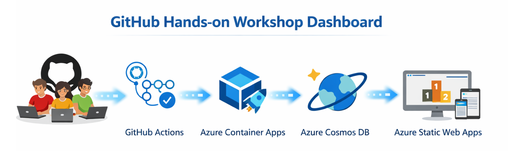

전체 참가자
| Rank | GitHub ID | Repo | 시작 시간 | 완료 시간 | 상태 |
|---|

GitHub Skills 기반 핸즈온 워크숍에서 참가자의 시작과 완료 이벤트를 실시간으로 수집하고, 먼저 완료한 순서대로 리더보드를 보여주는 대시보드입니다.
교육 회차별로 세션을 만들고 트랙, 시작일, 종료일을 관리합니다.
참가자의 시작/완료 이벤트를 SSE로 즉시 반영합니다.
완료 시각 기준 상위 3명을 포디움 형태로 표시합니다.
위에서 세션을 선택하거나 새 세션을 만들어 시작하세요.
| Rank | GitHub ID | Repo | 시작 시간 | 완료 시간 | 상태 |
|---|